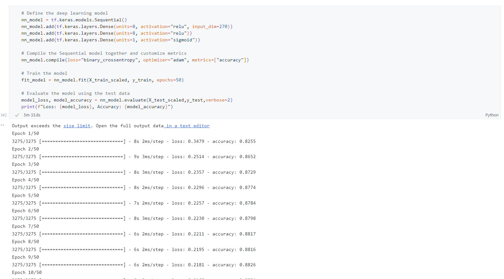
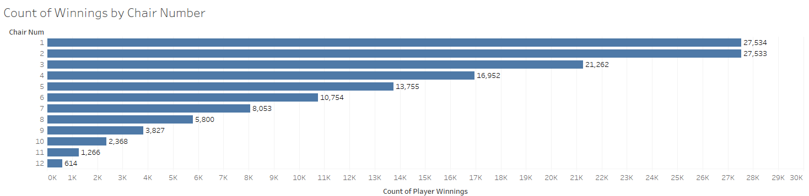
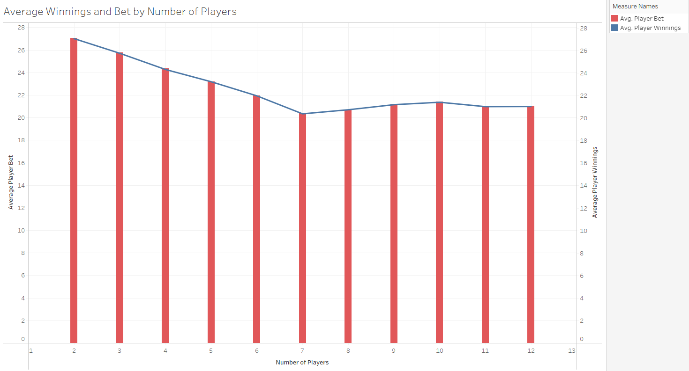

Our Data Journey
Data Cleanup
We started with data from the University of Alberta Computer Poker Research group that included three raw CSV files that included information on player's poker hands, winnings, actions during the
various rounds of Texas Hold 'Em, chair position, table information as well as betting information. The tables were stored in a sqlite database and imported using SQLalchemy. After reviewing the data, we used Pandas and Python to reduce the number of attributes to 12
(num_players, flop_pot, turn_pot, river_pot, chip_count, chair_num, player_bet, table_1, table_2, table_3, table_4, table_5, flop_players, turn_players, river_players) and used the "player_winnings"
column as our target value. Columns containing numerical values were converted to numberical types. For the non-numerical values, the "get_dummies" feature was used to allow for the selection of cards on the table. Those columns were table1 - table5
and represented the 5 cards that could be played throughout the round. This increased the number of columns from 12 to 270. The "y"/"player_winnings" column was formatted to 0's for rows with no winning values and 1's for rows with winnings in order to create our targets.
From there, we were able to move on creating the machine learning model.

Once the data had been cleaned, we moved on to the machine learning portion of the project which consisted of our instructor Nathan's three favorite steps: model, fit, predict. We used the Sci-Kit learning library



